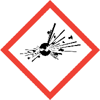
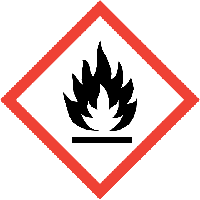
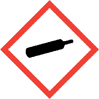
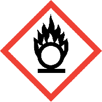
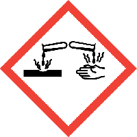
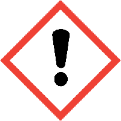
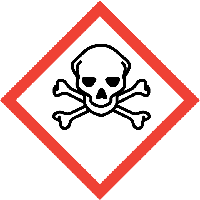
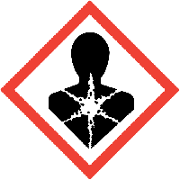
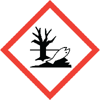

| PELIGROS |
| Pictograma |
Definición |
Áreas |
 |
EXPLOSION
• Explosivo inestable.
• Explosivo, peligro de explosión en masa.
• Explosivo, grave peligro de proyección.
• Explosivo, peligro de incendio, de onda expansiva o de proyección.
• Peligro de explosión en masa en caso de incendio.
|
• Troquelado
• Control Numerico
• Puntillas
• Inyeccion
• Taller
• Centrifuga
• Ensamble
• Planta Galvanica
|
|  |
INFLAMABLE
• Gas extremadamente inflamable
• Gas inflamable
• Aerosol extremadamente inflamable
• Aerosol inflamable
• Líquido y vapores muy inflamables
• Líquido y vapores inflamables
• Sólidos inflamables.
|
• Troquelado
• Control Numerico
• Puntillas
• Inyeccion
• Taller
• Centrifuga
• Ensamble
• Planta Galvanica
|
|  |
GAS A PRESION
• Contiene gas a presión; peligro de explosión en caso de calentamiento
• Contiene gas refrigerado; puede provocar quemaduras o lesiones criogénicas.
|
• Inyeccion
• Taller
|
 |
COMBURENTE
• Puede provocar o agravar un incendio; comburente.
• Puede provocar un incendio o una explosión; muy comburente.
.
|
• Troquelado
• Inyeccion
• Taller
|
|  |
CORROSIVO
• Puede ser corrosivo para los metales
• Provoca quemaduras graves en la piel y lesiones oculares graves
|
• Planta Galvanica
|
|  |
PELIGRO PARA LA SALUD
• Puede irritar las vías respiratorias
• Puede provocar somnolencia o vértigo
• Puede provocar una reacción alérgica en la piel
• Provoca irritación ocular grave
• Provoca irritación cutánea
• Nocivo en caso de ingestión
• Nocivo en contacto con la piel
• Nocivo en caso de inhalación
• Nociva para la salud pública y el medio ambiente por destruir el ozono estratosférico
|
• Planta Galvanica
|
|  |
TOXICO
• Mortal en caso de ingestión
• Mortal en contacto con la piel
• Mortal en caso de inhalación
• Tóxico en caso de ingestión
• Tóxico en contacto con la piel
• Tóxico por inhalación
|
• Planta Galvanica
|
|  |
PELIGRO GRAVE PARA LA SALUD
• Puede ser mortal en caso de ingestión y penetración en las vías respiratorias
• Perjudica a determinados órganos
• Puede perjudicar la fertilidad o al feto
• Puede provocar cáncer
• Puede provocar defectos genéticos
• Puede provocar síntomas de alergia o asma o dificultades respiratorias en caso de inhalación
|
• Planta Galvanica
|
|  |
PELIGRO PARA EL MEDIO AMBIENTE
• Tóxico para los organismos acuáticos, con efectos nocivos duraderos
|
• Planta Galvanica
|